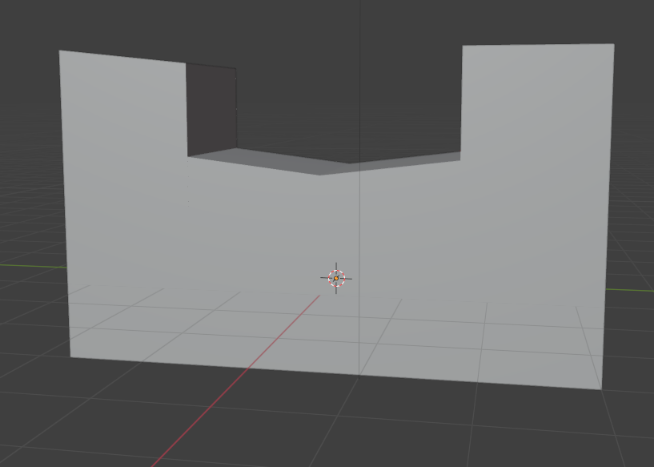
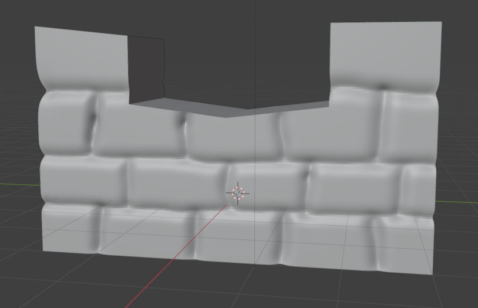
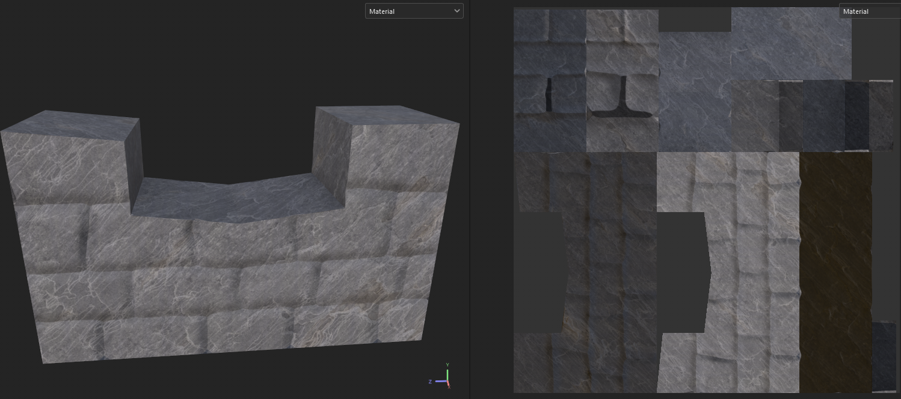
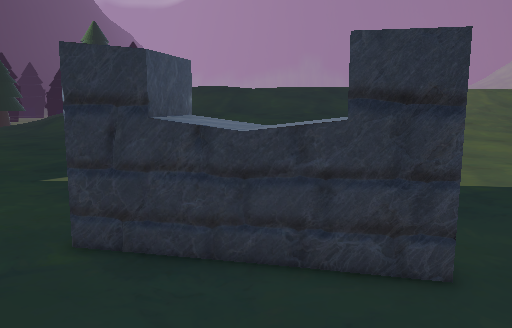
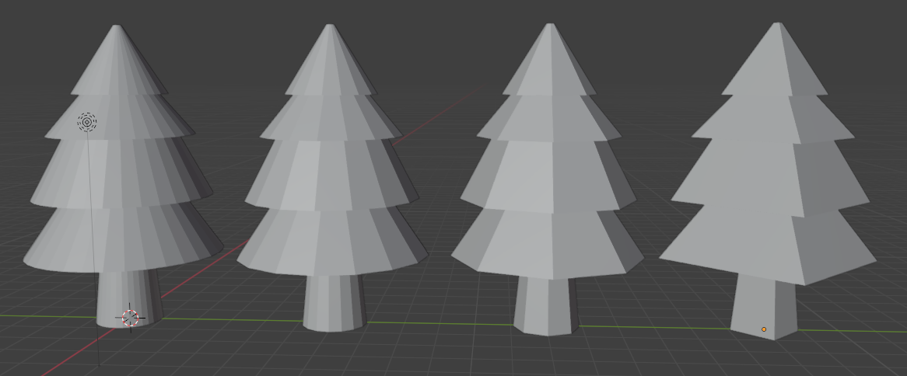
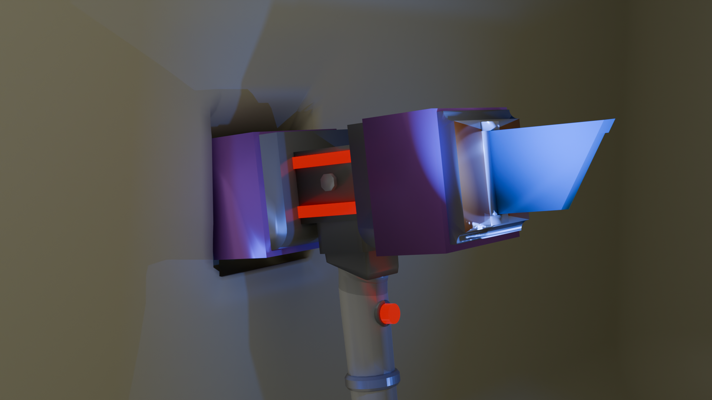
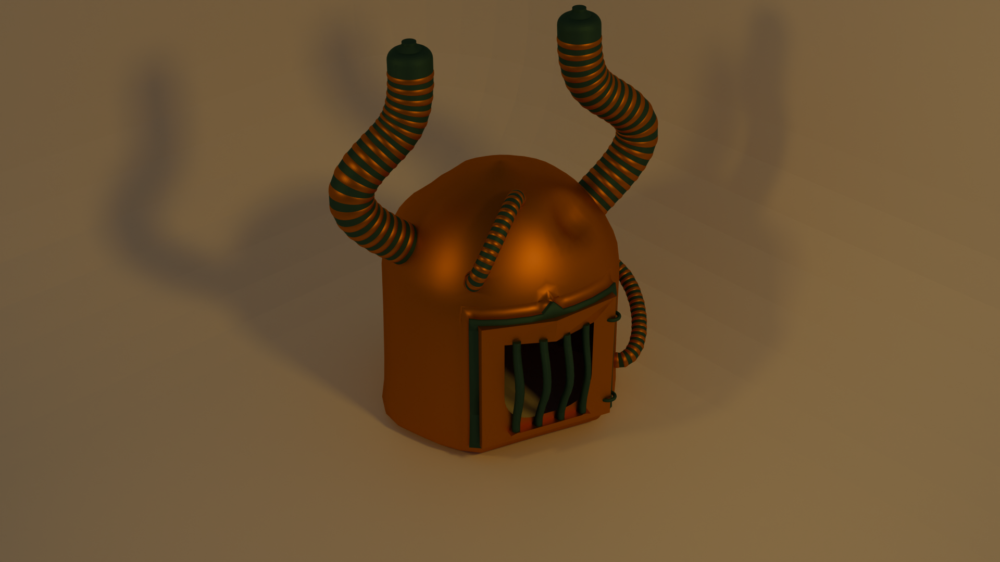
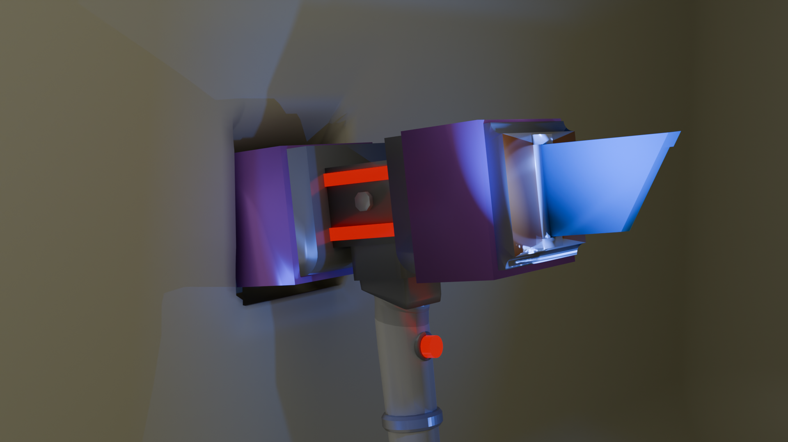
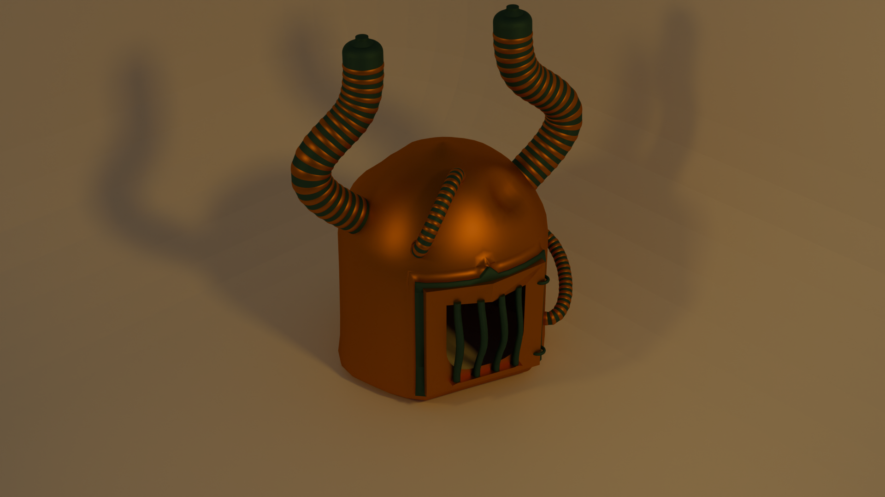

My models
I am currently learning the Blender program and it is the main software I use to create 3D models.
I am fairly skilled in several aspects of 3D modelling, such as UV unwrapping, texturing, lighting and baking. Below are some examples of models I have created in the last 2 years.
   This is a model of a wall cover I made for one of my projects, The Last Knight. I baked the model to add more detail without using too many polys. I created both the low poly and high poly version of the wall cover in Blender. Then, I baked the high poly model onto the low poly model. I used Adobe Substance Painter to texture the model, afterwards I imported the model into my Unity project.
For this model, I experimented with making an LOD tree. I wanted the tree model to get less detailed the further away you were from it. This required me to recreate the model 4 times, each being less detailed than the last.
Here are some more examples of my models.
 


